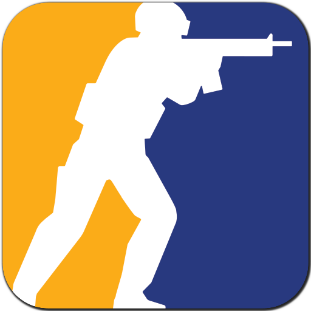
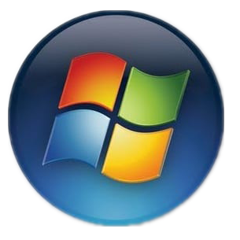
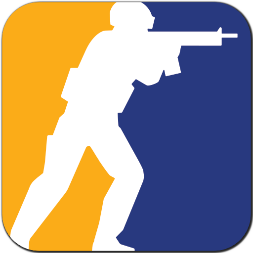
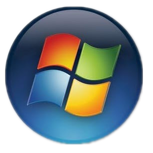

Greetings, I am Ahmet Deniz Sezgin. My entrance into the world was marked on September 5, 2005, and currently, I am pursuing an academic journey at Istanbul Kultur University. During my leisure, I engage in games such as  Minecraft and Counter  Strike , seeking both entertainment and mental engagement. Proficient in computer operations, I find joy in navigating the command prompt and delving into the intricacies of vintage operating systems, including but not limited to Windows 95, Windows 98, and Vista. Minecraft and Counter  Strike , seeking both entertainment and mental engagement. Proficient in computer operations, I find joy in navigating the command prompt and delving into the intricacies of vintage operating systems, including but not limited to Windows 95, Windows 98, and Vista. |
 a.deniz.sezgin@gmail.com
a.deniz.sezgin@gmail.com  Adobe Photoshop
Adobe Photoshop Adobe Premiere Pro
Adobe Premiere Pro Notepad++
Notepad++ Turkish (Native)
Turkish (Native)